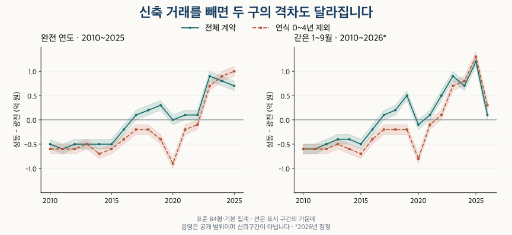

수도권 가격 지도 · 이웃한 두 구의 거래 구성
성동·광진 아파트 가격 비교: 84형 격차는 신축을 빼도 같을까?
2010~2026년 성동·광진 84형 아파트의 가격 격차를 같은 기간·연식으로 비교합니다. 신축·최다거래단지 제외, 면적·정제 조건, 현재 재고와 입주 자료에 따라 달라지는 해석을 확인하세요.
분석 기간 · 2010~2025년·같은 1~9월은 2026년까지 · 끝월 잠정 | 자료 기준일 · 거래 2026-10-04 · 재고 2026-10-02
성동구와 광진구의 84형 아파트를 비교할 때, 구 전체 중위가격의 순서가 같은 연식의 순서와 일치하지는 않습니다. 2025년 전체 거래에서는 성동이 높지만, 연식 20~29년끼리 비교하면 광진이 높습니다. 장기 비교에서도 연식 0~4년 거래를 빼면 두 구의 차이가 달라집니다.
성동·광진의 무엇을 같은 조건으로 비교했나요?
대상은 현재 단지 목록에서 성동구·광진구에 속하는 아파트 매매입니다. 84형(전용 25·26평형)은 전용면적을 평으로 환산해 반올림한 묶음으로, 약 80.99㎡ 이상 87.60㎡ 미만이며, 정확히 84㎡ 한 크기만 모은 것은 아닙니다. 별도로 84㎡ 이상 85㎡ 미만의 좁은 면적을 비교합니다. 공급면적의 평당가나 현재 매물 호가와는 다릅니다.
긴 기간을 같은 공통 정제 기준으로 읽는 기본 집계에는 관측된 해제·직거래도 포함됩니다. 보조 비교에서는 두 표시가 있는 거래를 제외합니다. 과거에 해당 항목이 비어 있었다고 확인된 정상 거래로 간주하지 않습니다. 토지임대부는 제외하고, 한 계약에 같은 비중을 준 중위가격과 25·75분위 경계를 계산했습니다.
가격 비교는 각 지역·기간·조건에서 40계약과 10단지 이상일 때 제공합니다. 같은 연식 비교는 양쪽 모두 이 조건을 충족해야 합니다. 비교 유보는 가격이 같거나 거래가 없다는 뜻이 아닙니다. 표시 가격은 0.1억 원 폭의 범위입니다. 예를 들어 16.2~16.3은 16.2억 원 이상 16.3억 원 미만이며, 정확한 중위가격이나 통계적 신뢰구간이 아닙니다.
2010~2025년은 완전 연도끼리, 2026년은 과거의 같은 1~9월끼리 비교합니다. 두 달력창은 계약이 겹치므로 서로 독립된 관측처럼 합쳐 세지 않습니다. 최근 2026년 9월까지의 계약은 잠정이며 이후 신고·해제로 달라질 수 있습니다.
84형 중위가격 격차는 계속 같은 방향이었나요?
2025년 완전 연도의 성동 중위가격은 16.2~16.3억 원, 광진은 15.5~15.6억 원입니다. 공개 구간으로 계산한 성동−광진 차이는 0.6~0.8억 원 범위입니다. 앞선 모든 해에서 성동이 높았던 것은 아닙니다. 아래 표의 방향은 두 구간이 겹치는지까지 확인한 결과입니다.
| 기간 | 성동 중위 | 광진 중위 | 성동−광진 | 성동/광진 | 방향 |
|---|---|---|---|---|---|
| 2010년 전체 | 5.0~5.1 | 5.5~5.6 | -0.6~-0.4 | 0.89~0.93 | 광진 높음 |
| 2011년 전체 | 4.9~5.0 | 5.5~5.6 | -0.7~-0.5 | 0.87~0.91 | 광진 높음 |
| 2012년 전체 | 4.7~4.8 | 5.2~5.3 | -0.6~-0.4 | 0.88~0.93 | 광진 높음 |
| 2013년 전체 | 4.7~4.8 | 5.2~5.3 | -0.6~-0.4 | 0.88~0.93 | 광진 높음 |
| 2014년 전체 | 5.0~5.1 | 5.5~5.6 | -0.6~-0.4 | 0.89~0.93 | 광진 높음 |
| 2015년 전체 | 5.2~5.3 | 5.7~5.8 | -0.6~-0.4 | 0.89~0.93 | 광진 높음 |
| 2016년 전체 | 5.8~5.9 | 6.0~6.1 | -0.3~-0.1 | 0.95~0.99 | 광진 높음 |
| 2017년 전체 | 6.6~6.7 | 6.5~6.6 | +0.0~+0.2 | 1.00~1.04 | 성동 높음 |
| 2018년 전체 | 8.5~8.6 | 8.3~8.4 | +0.1~+0.3 | 1.01~1.04 | 성동 높음 |
| 2019년 전체 | 9.9~10.0 | 9.6~9.7 | +0.2~+0.4 | 1.02~1.05 | 성동 높음 |
| 2020년 전체 | 12.0~12.1 | 12.0~12.1 | -0.1~+0.1 | 0.99~1.01 | 구간 중첩 |
| 2021년 전체 | 14.3~14.4 | 14.2~14.3 | +0.0~+0.2 | 1.00~1.02 | 성동 높음 |
| 2022년 전체 | 14.7~14.8 | 14.6~14.7 | +0.0~+0.2 | 1.00~1.02 | 성동 높음 |
| 2023년 전체 | 13.7~13.8 | 12.8~12.9 | +0.8~+1.0 | 1.06~1.08 | 성동 높음 |
| 2024년 전체 | 14.6~14.7 | 13.8~13.9 | +0.7~+0.9 | 1.05~1.07 | 성동 높음 |
| 2025년 전체 | 16.2~16.3 | 15.5~15.6 | +0.6~+0.8 | 1.03~1.06 | 성동 높음 |
2026년 1~9월의 기본 비교에서는 성동−광진 차이가 0.0~0.2억 원 범위입니다. 이는 2025년 완전 연도와 직접 비교할 값이 아닙니다. 같은 1~9월 전체 중위가격 차이의 절댓값은 2025년보다 0.9~1.3억 원 줄어든 범위로 계산됩니다. 격차가 줄었다고 두 지역의 같은 집 가격이 수렴했다고 단정할 수는 없습니다.
모든 연도의 같은 1~9월 비교 펼치기
| 기간 | 성동 중위 | 광진 중위 | 성동−광진 | 성동/광진 | 방향 |
|---|---|---|---|---|---|
| 2010년 1~9월 | 4.9~5.0 | 5.5~5.6 | -0.7~-0.5 | 0.87~0.91 | 광진 높음 |
| 2011년 1~9월 | 4.9~5.0 | 5.5~5.6 | -0.7~-0.5 | 0.87~0.91 | 광진 높음 |
| 2012년 1~9월 | 4.7~4.8 | 5.2~5.3 | -0.6~-0.4 | 0.88~0.93 | 광진 높음 |
| 2013년 1~9월 | 4.7~4.8 | 5.1~5.2 | -0.5~-0.3 | 0.90~0.95 | 광진 높음 |
| 2014년 1~9월 | 5.0~5.1 | 5.4~5.5 | -0.5~-0.3 | 0.90~0.95 | 광진 높음 |
| 2015년 1~9월 | 5.2~5.3 | 5.7~5.8 | -0.6~-0.4 | 0.89~0.93 | 광진 높음 |
| 2016년 1~9월 | 5.7~5.8 | 5.9~6.0 | -0.3~-0.1 | 0.95~0.99 | 광진 높음 |
| 2017년 1~9월 | 6.5~6.6 | 6.4~6.5 | +0.0~+0.2 | 1.00~1.04 | 성동 높음 |
| 2018년 1~9월 | 8.5~8.6 | 8.3~8.4 | +0.1~+0.3 | 1.01~1.04 | 성동 높음 |
| 2019년 1~9월 | 9.7~9.8 | 9.2~9.3 | +0.4~+0.6 | 1.04~1.07 | 성동 높음 |
| 2020년 1~9월 | 11.4~11.5 | 11.5~11.6 | -0.2~+0.0 | 0.98~1.00 | 광진 높음 |
| 2021년 1~9월 | 14.2~14.3 | 14.1~14.2 | +0.0~+0.2 | 1.00~1.02 | 성동 높음 |
| 2022년 1~9월 | 15.3~15.4 | 14.8~14.9 | +0.4~+0.6 | 1.02~1.05 | 성동 높음 |
| 2023년 1~9월 | 13.7~13.8 | 12.8~12.9 | +0.8~+1.0 | 1.06~1.08 | 성동 높음 |
| 2024년 1~9월 | 14.5~14.6 | 13.8~13.9 | +0.6~+0.8 | 1.04~1.06 | 성동 높음 |
| 2025년 1~9월 | 16.3~16.4 | 15.1~15.2 | +1.1~+1.3 | 1.07~1.09 | 성동 높음 |
| 2026년 1~9월 * | 18.1~18.2 | 18.0~18.1 | +0.0~+0.2 | 1.00~1.02 | 성동 높음 |
중위가격만으로 주택의 선택 범위를 다 설명할 수 없습니다. 가운데 절반의 가격 분포를 보면 두 지역 안의 차이와 지역 사이의 겹침을 함께 볼 수 있습니다. 다음 표의 25·75분위도 같은 표시 범위이며 개별 매물의 하한·상한이 아닙니다.
성동구 · 가격의 가운데 절반 범위
| 기간 | 하위 25% 경계 | 중위가격 | 상위 25% 경계 |
|---|---|---|---|
| 2010년 전체 | 4.4~4.5 | 5.0~5.1 | 5.5~5.6 |
| 2011년 전체 | 4.3~4.4 | 4.9~5.0 | 5.5~5.6 |
| 2012년 전체 | 4.2~4.3 | 4.7~4.8 | 5.2~5.3 |
| 2013년 전체 | 4.1~4.2 | 4.7~4.8 | 5.3~5.4 |
| 2014년 전체 | 4.3~4.4 | 5.0~5.1 | 5.6~5.7 |
| 2015년 전체 | 4.5~4.6 | 5.2~5.3 | 5.9~6.0 |
| 2016년 전체 | 5.0~5.1 | 5.8~5.9 | 6.7~6.8 |
| 2017년 전체 | 5.7~5.8 | 6.6~6.7 | 7.9~8.0 |
| 2018년 전체 | 7.0~7.1 | 8.5~8.6 | 10.0~10.1 |
| 2019년 전체 | 8.4~8.5 | 9.9~10.0 | 12.4~12.5 |
| 2020년 전체 | 9.4~9.5 | 12.0~12.1 | 14.3~14.4 |
| 2021년 전체 | 12.5~12.6 | 14.3~14.4 | 16.7~16.8 |
| 2022년 전체 | 12.3~12.4 | 14.7~14.8 | 16.9~17.0 |
| 2023년 전체 | 11.4~11.5 | 13.7~13.8 | 15.6~15.7 |
| 2024년 전체 | 12.0~12.1 | 14.6~14.7 | 17.0~17.1 |
| 2025년 전체 | 13.2~13.3 | 16.2~16.3 | 19.0~19.1 |
| 2010년 1~9월 | 4.4~4.5 | 4.9~5.0 | 5.6~5.7 |
| 2011년 1~9월 | 4.3~4.4 | 4.9~5.0 | 5.5~5.6 |
| 2012년 1~9월 | 4.2~4.3 | 4.7~4.8 | 5.2~5.3 |
| 2013년 1~9월 | 4.0~4.1 | 4.7~4.8 | 5.2~5.3 |
| 2014년 1~9월 | 4.3~4.4 | 5.0~5.1 | 5.6~5.7 |
| 2015년 1~9월 | 4.4~4.5 | 5.2~5.3 | 5.8~5.9 |
| 2016년 1~9월 | 4.9~5.0 | 5.7~5.8 | 6.5~6.6 |
| 2017년 1~9월 | 5.6~5.7 | 6.5~6.6 | 7.7~7.8 |
| 2018년 1~9월 | 7.0~7.1 | 8.5~8.6 | 10.0~10.1 |
| 2019년 1~9월 | 8.3~8.4 | 9.7~9.8 | 12.0~12.1 |
| 2020년 1~9월 | 9.0~9.1 | 11.4~11.5 | 13.9~14.0 |
| 2021년 1~9월 | 12.5~12.6 | 14.2~14.3 | 16.5~16.6 |
| 2022년 1~9월 | 12.8~12.9 | 15.3~15.4 | 17.2~17.3 |
| 2023년 1~9월 | 11.3~11.4 | 13.7~13.8 | 15.6~15.7 |
| 2024년 1~9월 | 12.0~12.1 | 14.5~14.6 | 17.0~17.1 |
| 2025년 1~9월 | 13.4~13.5 | 16.3~16.4 | 19.0~19.1 |
| 2026년 1~9월 * | 14.9~15.0 | 18.1~18.2 | 21.5~21.6 |
광진구 · 가격의 가운데 절반 범위
| 기간 | 하위 25% 경계 | 중위가격 | 상위 25% 경계 |
|---|---|---|---|
| 2010년 전체 | 5.0~5.1 | 5.5~5.6 | 6.1~6.2 |
| 2011년 전체 | 5.0~5.1 | 5.5~5.6 | 6.1~6.2 |
| 2012년 전체 | 4.6~4.7 | 5.2~5.3 | 5.9~6.0 |
| 2013년 전체 | 4.6~4.7 | 5.2~5.3 | 5.8~5.9 |
| 2014년 전체 | 4.9~5.0 | 5.5~5.6 | 6.0~6.1 |
| 2015년 전체 | 5.0~5.1 | 5.7~5.8 | 6.3~6.4 |
| 2016년 전체 | 5.3~5.4 | 6.0~6.1 | 6.7~6.8 |
| 2017년 전체 | 5.8~5.9 | 6.5~6.6 | 7.4~7.5 |
| 2018년 전체 | 6.9~7.0 | 8.3~8.4 | 9.3~9.4 |
| 2019년 전체 | 8.6~8.7 | 9.6~9.7 | 11.0~11.1 |
| 2020년 전체 | 9.5~9.6 | 12.0~12.1 | 13.5~13.6 |
| 2021년 전체 | 12.1~12.2 | 14.2~14.3 | 15.8~15.9 |
| 2022년 전체 | 12.0~12.1 | 14.6~14.7 | 15.7~15.8 |
| 2023년 전체 | 11.4~11.5 | 12.8~12.9 | 14.1~14.2 |
| 2024년 전체 | 12.0~12.1 | 13.8~13.9 | 15.5~15.6 |
| 2025년 전체 | 13.3~13.4 | 15.5~15.6 | 17.8~17.9 |
| 2010년 1~9월 | 4.9~5.0 | 5.5~5.6 | 6.1~6.2 |
| 2011년 1~9월 | 5.0~5.1 | 5.5~5.6 | 6.2~6.3 |
| 2012년 1~9월 | 4.5~4.6 | 5.2~5.3 | 5.9~6.0 |
| 2013년 1~9월 | 4.6~4.7 | 5.1~5.2 | 5.7~5.8 |
| 2014년 1~9월 | 4.8~4.9 | 5.4~5.5 | 6.0~6.1 |
| 2015년 1~9월 | 5.0~5.1 | 5.7~5.8 | 6.3~6.4 |
| 2016년 1~9월 | 5.3~5.4 | 5.9~6.0 | 6.6~6.7 |
| 2017년 1~9월 | 5.7~5.8 | 6.4~6.5 | 7.1~7.2 |
| 2018년 1~9월 | 6.9~7.0 | 8.3~8.4 | 9.2~9.3 |
| 2019년 1~9월 | 8.4~8.5 | 9.2~9.3 | 10.4~10.5 |
| 2020년 1~9월 | 9.2~9.3 | 11.5~11.6 | 13.1~13.2 |
| 2021년 1~9월 | 11.9~12.0 | 14.1~14.2 | 15.8~15.9 |
| 2022년 1~9월 | 12.7~12.8 | 14.8~14.9 | 15.7~15.8 |
| 2023년 1~9월 | 11.4~11.5 | 12.8~12.9 | 14.0~14.1 |
| 2024년 1~9월 | 12.0~12.1 | 13.8~13.9 | 15.4~15.5 |
| 2025년 1~9월 | 13.2~13.3 | 15.1~15.2 | 17.2~17.3 |
| 2026년 1~9월 * | 14.0~14.1 | 18.0~18.1 | 21.0~21.1 |
‘격차가 가장 벌어진 해’는 언제인가요?
두 질문을 나눠야 합니다. 격차 수준 최대는 그 해 두 중위가격 차이의 절댓값이 가장 큰 시점입니다. 전년 확대폭 최대는 그 절댓값이 바로 전 달력연도보다 가장 많이 커진 시점입니다. 성동이 높든 광진이 높든 절댓값으로 비교합니다.
표준 84형·기본·전체 계약에서 완전 연도의 격차 수준은 공개 범위상 2023·2024·2025년이 모두 후보입니다. 정확한 원천 값의 한 해만 골라 공개 표보다 정밀한 순위를 붙이지 않았습니다. 같은 조건의 전년 확대폭 최대는 2023년만 후보로 남습니다. 같은 1~9월에서는 격차 수준 최대가 2025년이며, 확대폭 최대는 여러 해가 가능합니다.
| 달력창 | 거래 구성 | 격차 수준 최대 후보 | 전년 확대폭 최대 후보 |
|---|---|---|---|
| 완전 연도 | 전체 계약 | 2023, 2024, 2025 | 2023 |
| 완전 연도 | 최다거래단지 제외 | 2023 | 2012, 2014, 2018, 2021, 2023 |
| 완전 연도 | 연식 0~4년 제외 | 2020, 2024, 2025 | 2014, 2019, 2020, 2023, 2024 |
| 1~9월 | 전체 계약 | 2025 | 2015, 2018, 2019, 2022, 2023, 2025 |
| 1~9월 | 최다거래단지 제외 | 2023, 2025, 2026 | 2018, 2021, 2023, 2025 |
| 1~9월 | 연식 0~4년 제외 | 2025 | 2020, 2023, 2025 |
후보 연도가 여러 개라는 것은 그 해의 값이 실제로 모두 같다는 뜻이 아닙니다. 각 해의 공개 상한이 전체 최대 하한에 닿을 수 있는 해를 남긴 결과입니다. 최다거래단지나 연식 0~4년을 제외하면 비교 대상과 후보 시점도 바뀝니다.
신축이나 거래가 몰린 단지를 빼도 같을까요?
당시 연식은 계약연도−현재 단지 목록의 준공연도입니다. 여기서 신축 민감도는 연식 0~4년 거래를 제외하고, 준공연도가 알려진 5년 이상 거래만 남깁니다. 입주 첫해의 계약이나 실제 입주자만 따로 식별한 것은 아닙니다.

완전 연도에서는 연식 0~4년 제외 후 광진이 높은 기간이 13개입니다. 같은 1~9월에서는 전체 계약 기준 성동 9개·광진 8개에서, 제외 후 성동 5개·광진 12개로 바뀝니다. 하지만 최근의 모든 비교가 반전하는 것은 아닙니다. 2025년 완전 연도와 2026년 1~9월은 신축 제외 후에도 성동이 높은 방향입니다.
다른 민감도로는 각 조건에서 계약이 가장 많은 단지 하나를 제외했습니다. 건수가 같으면 미리 정한 단지 순서로 하나를 선택하며, 남은 계약에 원래의 표본 기준을 다시 적용합니다. 2026년 1~9월에는 전체의 차이 범위 0.0~0.2억 원이 최다거래단지 제외 후 0.7~0.9억 원이 됩니다. 거래 집중이 대표값에 미치는 영향도 무시하기 어렵습니다.
아래 세 표는 전체 계약을 유지하면서 두 제외 결과를 함께 제공합니다. 각 표 안에서 면적과 해제·직거래 처리도 바꿔 볼 수 있습니다. ‘제외’ 열은 관측 해제·직거래 제외이며, 단지·연식 제외는 표 제목의 조건입니다.
전체 계약 · 면적/정제별 전 기간 비교
| 기간 | 표준·기본 | 좁은 면적·기본 | 표준·제외 | 좁은 면적·제외 |
|---|---|---|---|---|
| 2010년 전체 | -0.6~-0.4 | -0.7~-0.5 | -0.6~-0.4 | -0.7~-0.5 |
| 2011년 전체 | -0.7~-0.5 | -0.7~-0.5 | -0.7~-0.5 | -0.7~-0.5 |
| 2012년 전체 | -0.6~-0.4 | -0.7~-0.5 | -0.6~-0.4 | -0.7~-0.5 |
| 2013년 전체 | -0.6~-0.4 | -0.6~-0.4 | -0.6~-0.4 | -0.6~-0.4 |
| 2014년 전체 | -0.6~-0.4 | -0.7~-0.5 | -0.6~-0.4 | -0.7~-0.5 |
| 2015년 전체 | -0.6~-0.4 | -0.7~-0.5 | -0.6~-0.4 | -0.7~-0.5 |
| 2016년 전체 | -0.3~-0.1 | -0.3~-0.1 | -0.3~-0.1 | -0.3~-0.1 |
| 2017년 전체 | +0.0~+0.2 | -0.1~+0.1 | +0.0~+0.2 | -0.1~+0.1 |
| 2018년 전체 | +0.1~+0.3 | +0.0~+0.2 | +0.1~+0.3 | +0.0~+0.2 |
| 2019년 전체 | +0.2~+0.4 | +0.1~+0.3 | +0.2~+0.4 | +0.1~+0.3 |
| 2020년 전체 | -0.1~+0.1 | -0.4~-0.2 | -0.2~+0.0 | -0.4~-0.2 |
| 2021년 전체 | +0.0~+0.2 | -0.2~+0.0 | -0.1~+0.1 | -0.3~-0.1 |
| 2022년 전체 | +0.0~+0.2 | -0.1~+0.1 | +0.3~+0.5 | +0.2~+0.4 |
| 2023년 전체 | +0.8~+1.0 | +0.6~+0.8 | +0.8~+1.0 | +0.8~+1.0 |
| 2024년 전체 | +0.7~+0.9 | +0.6~+0.8 | +0.7~+0.9 | +0.6~+0.8 |
| 2025년 전체 | +0.6~+0.8 | +0.4~+0.6 | +0.6~+0.8 | +0.4~+0.6 |
| 2010년 1~9월 | -0.7~-0.5 | -0.6~-0.4 | -0.7~-0.5 | -0.6~-0.4 |
| 2011년 1~9월 | -0.7~-0.5 | -0.8~-0.6 | -0.7~-0.5 | -0.8~-0.6 |
| 2012년 1~9월 | -0.6~-0.4 | -0.7~-0.5 | -0.6~-0.4 | -0.7~-0.5 |
| 2013년 1~9월 | -0.5~-0.3 | -0.6~-0.4 | -0.5~-0.3 | -0.6~-0.4 |
| 2014년 1~9월 | -0.5~-0.3 | -0.6~-0.4 | -0.5~-0.3 | -0.6~-0.4 |
| 2015년 1~9월 | -0.6~-0.4 | -0.7~-0.5 | -0.6~-0.4 | -0.7~-0.5 |
| 2016년 1~9월 | -0.3~-0.1 | -0.4~-0.2 | -0.3~-0.1 | -0.4~-0.2 |
| 2017년 1~9월 | +0.0~+0.2 | -0.1~+0.1 | +0.0~+0.2 | -0.1~+0.1 |
| 2018년 1~9월 | +0.1~+0.3 | +0.0~+0.2 | +0.1~+0.3 | +0.0~+0.2 |
| 2019년 1~9월 | +0.4~+0.6 | +0.3~+0.5 | +0.4~+0.6 | +0.3~+0.5 |
| 2020년 1~9월 | -0.2~+0.0 | -0.6~-0.4 | -0.2~+0.0 | -0.6~-0.4 |
| 2021년 1~9월 | +0.0~+0.2 | -0.3~-0.1 | +0.1~+0.3 | -0.2~+0.0 |
| 2022년 1~9월 | +0.4~+0.6 | +0.3~+0.5 | +0.5~+0.7 | +0.6~+0.8 |
| 2023년 1~9월 | +0.8~+1.0 | +0.7~+0.9 | +0.9~+1.1 | +0.8~+1.0 |
| 2024년 1~9월 | +0.6~+0.8 | +0.4~+0.6 | +0.5~+0.7 | +0.4~+0.6 |
| 2025년 1~9월 | +1.1~+1.3 | +0.8~+1.0 | +1.0~+1.2 | +0.7~+0.9 |
| 2026년 1~9월 * | +0.0~+0.2 | -0.5~-0.3 | +0.1~+0.3 | -0.5~-0.3 |
최다거래단지 제외 · 면적/정제별 전 기간 비교
| 기간 | 표준·기본 | 좁은 면적·기본 | 표준·제외 | 좁은 면적·제외 |
|---|---|---|---|---|
| 2010년 전체 | -0.7~-0.5 | -0.8~-0.6 | -0.7~-0.5 | -0.8~-0.6 |
| 2011년 전체 | -0.7~-0.5 | -0.8~-0.6 | -0.7~-0.5 | -0.8~-0.6 |
| 2012년 전체 | -0.8~-0.6 | -0.9~-0.7 | -0.8~-0.6 | -0.9~-0.7 |
| 2013년 전체 | -0.6~-0.4 | -0.8~-0.6 | -0.6~-0.4 | -0.8~-0.6 |
| 2014년 전체 | -0.7~-0.5 | -0.8~-0.6 | -0.7~-0.5 | -0.8~-0.6 |
| 2015년 전체 | -0.5~-0.3 | -0.6~-0.4 | -0.5~-0.3 | -0.6~-0.4 |
| 2016년 전체 | -0.3~-0.1 | -0.3~-0.1 | -0.3~-0.1 | -0.3~-0.1 |
| 2017년 전체 | -0.1~+0.1 | -0.2~+0.0 | -0.1~+0.1 | -0.2~+0.0 |
| 2018년 전체 | +0.3~+0.5 | +0.1~+0.3 | +0.3~+0.5 | +0.1~+0.3 |
| 2019년 전체 | +0.0~+0.2 | -0.2~+0.0 | +0.0~+0.2 | -0.2~+0.0 |
| 2020년 전체 | -0.1~+0.1 | -0.3~-0.1 | -0.1~+0.1 | -0.3~-0.1 |
| 2021년 전체 | +0.4~+0.6 | +0.1~+0.3 | +0.4~+0.6 | +0.1~+0.3 |
| 2022년 전체 | +0.4~+0.6 | +0.5~+0.7 | +0.6~+0.8 | +1.0~+1.2 |
| 2023년 전체 | +0.9~+1.1 | +0.8~+1.0 | +0.9~+1.1 | +0.6~+0.8 |
| 2024년 전체 | +0.6~+0.8 | +0.4~+0.6 | +0.6~+0.8 | +0.4~+0.6 |
| 2025년 전체 | +0.4~+0.6 | +0.1~+0.3 | +0.3~+0.5 | +0.1~+0.3 |
| 2010년 1~9월 | -0.6~-0.4 | -0.7~-0.5 | -0.6~-0.4 | -0.7~-0.5 |
| 2011년 1~9월 | -0.7~-0.5 | -0.9~-0.7 | -0.7~-0.5 | -0.9~-0.7 |
| 2012년 1~9월 | -0.8~-0.6 | -0.9~-0.7 | -0.8~-0.6 | -0.9~-0.7 |
| 2013년 1~9월 | -0.7~-0.5 | -0.7~-0.5 | -0.7~-0.5 | -0.7~-0.5 |
| 2014년 1~9월 | -0.5~-0.3 | -0.7~-0.5 | -0.5~-0.3 | -0.7~-0.5 |
| 2015년 1~9월 | -0.5~-0.3 | -0.7~-0.5 | -0.5~-0.3 | -0.7~-0.5 |
| 2016년 1~9월 | -0.2~+0.0 | -0.3~-0.1 | -0.2~+0.0 | -0.3~-0.1 |
| 2017년 1~9월 | -0.1~+0.1 | -0.1~+0.1 | -0.1~+0.1 | -0.1~+0.1 |
| 2018년 1~9월 | +0.3~+0.5 | +0.2~+0.4 | +0.3~+0.5 | +0.2~+0.4 |
| 2019년 1~9월 | +0.1~+0.3 | +0.0~+0.2 | +0.1~+0.3 | +0.0~+0.2 |
| 2020년 1~9월 | +0.1~+0.3 | -0.5~-0.3 | +0.0~+0.2 | -0.5~-0.3 |
| 2021년 1~9월 | +0.4~+0.6 | +0.2~+0.4 | +0.4~+0.6 | +0.3~+0.5 |
| 2022년 1~9월 | +0.2~+0.4 | +0.2~+0.4 | +0.6~+0.8 | +0.7~+0.9 |
| 2023년 1~9월 | +0.9~+1.1 | +0.8~+1.0 | +1.0~+1.2 | +0.6~+0.8 |
| 2024년 1~9월 | +0.4~+0.6 | +0.2~+0.4 | +0.4~+0.6 | +0.3~+0.5 |
| 2025년 1~9월 | +0.9~+1.1 | +0.5~+0.7 | +0.8~+1.0 | +0.4~+0.6 |
| 2026년 1~9월 * | +0.7~+0.9 | +0.3~+0.5 | +0.7~+0.9 | +0.2~+0.4 |
연식 0~4년 제외 · 면적/정제별 전 기간 비교
| 기간 | 표준·기본 | 좁은 면적·기본 | 표준·제외 | 좁은 면적·제외 |
|---|---|---|---|---|
| 2010년 전체 | -0.7~-0.5 | -0.7~-0.5 | -0.7~-0.5 | -0.7~-0.5 |
| 2011년 전체 | -0.7~-0.5 | -0.7~-0.5 | -0.7~-0.5 | -0.7~-0.5 |
| 2012년 전체 | -0.7~-0.5 | -0.8~-0.6 | -0.7~-0.5 | -0.8~-0.6 |
| 2013년 전체 | -0.6~-0.4 | -0.7~-0.5 | -0.6~-0.4 | -0.7~-0.5 |
| 2014년 전체 | -0.8~-0.6 | -0.9~-0.7 | -0.8~-0.6 | -0.9~-0.7 |
| 2015년 전체 | -0.7~-0.5 | -0.8~-0.6 | -0.7~-0.5 | -0.8~-0.6 |
| 2016년 전체 | -0.5~-0.3 | -0.5~-0.3 | -0.5~-0.3 | -0.5~-0.3 |
| 2017년 전체 | -0.3~-0.1 | -0.4~-0.2 | -0.3~-0.1 | -0.4~-0.2 |
| 2018년 전체 | -0.3~-0.1 | -0.4~-0.2 | -0.3~-0.1 | -0.4~-0.2 |
| 2019년 전체 | -0.5~-0.3 | -0.5~-0.3 | -0.5~-0.3 | -0.5~-0.3 |
| 2020년 전체 | -1.0~-0.8 | -1.3~-1.1 | -1.0~-0.8 | -1.3~-1.1 |
| 2021년 전체 | -0.3~-0.1 | -0.5~-0.3 | -0.4~-0.2 | -0.6~-0.4 |
| 2022년 전체 | -0.2~+0.0 | -0.3~-0.1 | +0.1~+0.3 | +0.0~+0.2 |
| 2023년 전체 | +0.6~+0.8 | +0.4~+0.6 | +0.5~+0.7 | +0.4~+0.6 |
| 2024년 전체 | +0.8~+1.0 | +0.7~+0.9 | +0.9~+1.1 | +0.7~+0.9 |
| 2025년 전체 | +0.9~+1.1 | +0.6~+0.8 | +0.9~+1.1 | +0.5~+0.7 |
| 2010년 1~9월 | -0.7~-0.5 | -0.7~-0.5 | -0.7~-0.5 | -0.7~-0.5 |
| 2011년 1~9월 | -0.7~-0.5 | -0.7~-0.5 | -0.7~-0.5 | -0.7~-0.5 |
| 2012년 1~9월 | -0.7~-0.5 | -0.8~-0.6 | -0.7~-0.5 | -0.8~-0.6 |
| 2013년 1~9월 | -0.6~-0.4 | -0.7~-0.5 | -0.6~-0.4 | -0.7~-0.5 |
| 2014년 1~9월 | -0.7~-0.5 | -0.8~-0.6 | -0.7~-0.5 | -0.8~-0.6 |
| 2015년 1~9월 | -0.8~-0.6 | -0.8~-0.6 | -0.8~-0.6 | -0.8~-0.6 |
| 2016년 1~9월 | -0.5~-0.3 | -0.6~-0.4 | -0.5~-0.3 | -0.6~-0.4 |
| 2017년 1~9월 | -0.3~-0.1 | -0.4~-0.2 | -0.3~-0.1 | -0.4~-0.2 |
| 2018년 1~9월 | -0.3~-0.1 | -0.5~-0.3 | -0.3~-0.1 | -0.5~-0.3 |
| 2019년 1~9월 | -0.3~-0.1 | -0.4~-0.2 | -0.3~-0.1 | -0.4~-0.2 |
| 2020년 1~9월 | -0.9~-0.7 | -1.3~-1.1 | -0.9~-0.7 | -1.3~-1.1 |
| 2021년 1~9월 | -0.2~+0.0 | -0.6~-0.4 | -0.3~-0.1 | -0.5~-0.3 |
| 2022년 1~9월 | +0.0~+0.2 | +0.0~+0.2 | +0.4~+0.6 | +0.3~+0.5 |
| 2023년 1~9월 | +0.6~+0.8 | +0.5~+0.7 | +0.6~+0.8 | +0.4~+0.6 |
| 2024년 1~9월 | +0.7~+0.9 | +0.5~+0.7 | +0.6~+0.8 | +0.5~+0.7 |
| 2025년 1~9월 | +1.2~+1.4 | +1.1~+1.3 | +1.2~+1.4 | +1.0~+1.2 |
| 2026년 1~9월 * | +0.2~+0.4 | -0.4~-0.2 | +0.1~+0.3 | -0.4~-0.2 |
이 값들은 비싼 단지의 영향만 제거한 정답이 아닙니다. 신축을 빼면 입지·층·단지 규모도 달라질 수 있고, 최다거래단지를 빼면 그 지역의 중요한 주택 유형을 함께 빼게 됩니다. 구성 반론을 확인하는 민감도이며, 신축 입주가 구 전체 가격을 올리거나 내렸다는 인과 추정은 아닙니다.
성동구 · 당시 거래 연식 비중
| 기간 | 0~4년 | 5년 이상 | 미상 |
|---|---|---|---|
| 2010년 전체 | 10~20 | 80~90 | 0~10 |
| 2011년 전체 | 0~10 | 90~100 | 0~10 |
| 2012년 전체 | 0~10 | 90~100 | 0~10 |
| 2013년 전체 | 10~20 | 80~90 | 0~10 |
| 2014년 전체 | 10~20 | 80~90 | 0~10 |
| 2015년 전체 | 10~20 | 80~90 | 0~10 |
| 2016년 전체 | 10~20 | 80~90 | 0~10 |
| 2017년 전체 | 10~20 | 80~90 | 0~10 |
| 2018년 전체 | 10~20 | 80~90 | 0~10 |
| 2019년 전체 | 20~30 | 70~80 | 0~10 |
| 2020년 전체 | 10~20 | 80~90 | 0~10 |
| 2021년 전체 | 0~10 | 90~100 | 0~10 |
| 2022년 전체 | 비교 유보 | 비교 유보 | 비교 유보 |
| 2023년 전체 | 0~10 | 90~100 | 0~10 |
| 2024년 전체 | 비교 유보 | 비교 유보 | 비교 유보 |
| 2025년 전체 | 0~10 | 90~100 | 0~10 |
| 2010년 1~9월 | 20~30 | 70~80 | 0~10 |
| 2011년 1~9월 | 0~10 | 90~100 | 0~10 |
| 2012년 1~9월 | 0~10 | 90~100 | 0~10 |
| 2013년 1~9월 | 10~20 | 80~90 | 0~10 |
| 2014년 1~9월 | 10~20 | 80~90 | 0~10 |
| 2015년 1~9월 | 10~20 | 80~90 | 0~10 |
| 2016년 1~9월 | 10~20 | 80~90 | 0~10 |
| 2017년 1~9월 | 10~20 | 80~90 | 0~10 |
| 2018년 1~9월 | 10~20 | 80~90 | 0~10 |
| 2019년 1~9월 | 20~30 | 70~80 | 0~10 |
| 2020년 1~9월 | 10~20 | 80~90 | 0~10 |
| 2021년 1~9월 | 0~10 | 90~100 | 0~10 |
| 2022년 1~9월 | 비교 유보 | 비교 유보 | 비교 유보 |
| 2023년 1~9월 | 0~10 | 90~100 | 0~10 |
| 2024년 1~9월 | 비교 유보 | 비교 유보 | 비교 유보 |
| 2025년 1~9월 | 0~10 | 90~100 | 0~10 |
| 2026년 1~9월 * | 비교 유보 | 비교 유보 | 비교 유보 |
광진구 · 당시 거래 연식 비중
| 기간 | 0~4년 | 5년 이상 | 미상 |
|---|---|---|---|
| 2010년 전체 | 10~20 | 80~90 | 0~10 |
| 2011년 전체 | 0~10 | 90~100 | 0~10 |
| 2012년 전체 | 비교 유보 | 비교 유보 | 비교 유보 |
| 2013년 전체 | 0~10 | 90~100 | 0~10 |
| 2014년 전체 | 0~10 | 90~100 | 0~10 |
| 2015년 전체 | 0~10 | 90~100 | 0~10 |
| 2016년 전체 | 0~10 | 90~100 | 0~10 |
| 2017년 전체 | 0~10 | 90~100 | 0~10 |
| 2018년 전체 | 비교 유보 | 비교 유보 | 비교 유보 |
| 2019년 전체 | 0~10 | 90~100 | 0~10 |
| 2020년 전체 | 0~10 | 90~100 | 0~10 |
| 2021년 전체 | 0~10 | 90~100 | 0~10 |
| 2022년 전체 | 비교 유보 | 비교 유보 | 비교 유보 |
| 2023년 전체 | 비교 유보 | 비교 유보 | 비교 유보 |
| 2024년 전체 | 0~10 | 90~100 | 0~10 |
| 2025년 전체 | 0~10 | 90~100 | 0~10 |
| 2010년 1~9월 | 10~20 | 80~90 | 0~10 |
| 2011년 1~9월 | 0~10 | 90~100 | 0~10 |
| 2012년 1~9월 | 비교 유보 | 비교 유보 | 비교 유보 |
| 2013년 1~9월 | 비교 유보 | 비교 유보 | 비교 유보 |
| 2014년 1~9월 | 0~10 | 90~100 | 0~10 |
| 2015년 1~9월 | 0~10 | 90~100 | 0~10 |
| 2016년 1~9월 | 0~10 | 90~100 | 0~10 |
| 2017년 1~9월 | 0~10 | 90~100 | 0~10 |
| 2018년 1~9월 | 비교 유보 | 비교 유보 | 비교 유보 |
| 2019년 1~9월 | 0~10 | 90~100 | 0~10 |
| 2020년 1~9월 | 0~10 | 90~100 | 0~10 |
| 2021년 1~9월 | 0~10 | 90~100 | 0~10 |
| 2022년 1~9월 | 비교 유보 | 비교 유보 | 비교 유보 |
| 2023년 1~9월 | 비교 유보 | 비교 유보 | 비교 유보 |
| 2024년 1~9월 | 0~10 | 90~100 | 0~10 |
| 2025년 1~9월 | 0~10 | 90~100 | 0~10 |
| 2026년 1~9월 * | 비교 유보 | 비교 유보 | 비교 유보 |
같은 연식끼리 비교하면 어느 쪽이 높은가요?
2025년 완전 연도에서 연식 10~19년의 중위가격은 성동 17.4~17.5억 원, 광진 15.9~16.0억 원입니다. 반면 연식 20~29년은 성동 14.0~14.1억 원, 광진 15.0~15.1억 원으로 방향이 반대입니다. ‘성동의 84형’처럼 지역과 크기만 맞춘 요약이 관심 주택의 비교를 대신할 수 없습니다.
0~4년과 30년 이상은 양쪽에서 동시에 충분히 비교되는 기간이 적습니다. 특히 신축만의 유보를 구 전체 비교나 5년 이상 비교의 값으로 채우지 않았습니다. 5~9·10~19·20~29년 역시 같은 연식 구간 안에서 준공연도·입지·층이 완전히 같은 것은 아닙니다.
같은 연식 0~4년 · 전 기간 비교
| 기간 | 성동 중위 | 광진 중위 | 방향 |
|---|---|---|---|
| 2010년 전체 | 5.4~5.5 | 6.1~6.2 | 광진 높음 |
| 2011년 전체 | 5.5~5.6 | 비교 유보 | 비교 유보 |
| 2012년 전체 | 비교 유보 | 비교 유보 | 비교 유보 |
| 2013년 전체 | 5.6~5.7 | 비교 유보 | 비교 유보 |
| 2014년 전체 | 6.4~6.5 | 비교 유보 | 비교 유보 |
| 2015년 전체 | 6.9~7.0 | 비교 유보 | 비교 유보 |
| 2016년 전체 | 7.4~7.5 | 비교 유보 | 비교 유보 |
| 2017년 전체 | 8.1~8.2 | 비교 유보 | 비교 유보 |
| 2018년 전체 | 10.5~10.6 | 비교 유보 | 비교 유보 |
| 2019년 전체 | 12.8~12.9 | 비교 유보 | 비교 유보 |
| 2020년 전체 | 15.2~15.3 | 비교 유보 | 비교 유보 |
| 2021년 전체 | 비교 유보 | 비교 유보 | 비교 유보 |
| 2022년 전체 | 비교 유보 | 비교 유보 | 비교 유보 |
| 2023년 전체 | 비교 유보 | 비교 유보 | 비교 유보 |
| 2024년 전체 | 비교 유보 | 비교 유보 | 비교 유보 |
| 2025년 전체 | 비교 유보 | 비교 유보 | 비교 유보 |
| 2010년 1~9월 | 5.4~5.5 | 비교 유보 | 비교 유보 |
| 2011년 1~9월 | 비교 유보 | 비교 유보 | 비교 유보 |
| 2012년 1~9월 | 비교 유보 | 비교 유보 | 비교 유보 |
| 2013년 1~9월 | 5.5~5.6 | 비교 유보 | 비교 유보 |
| 2014년 1~9월 | 비교 유보 | 비교 유보 | 비교 유보 |
| 2015년 1~9월 | 6.9~7.0 | 비교 유보 | 비교 유보 |
| 2016년 1~9월 | 7.2~7.3 | 비교 유보 | 비교 유보 |
| 2017년 1~9월 | 7.9~8.0 | 비교 유보 | 비교 유보 |
| 2018년 1~9월 | 10.4~10.5 | 비교 유보 | 비교 유보 |
| 2019년 1~9월 | 12.5~12.6 | 비교 유보 | 비교 유보 |
| 2020년 1~9월 | 14.9~15.0 | 비교 유보 | 비교 유보 |
| 2021년 1~9월 | 비교 유보 | 비교 유보 | 비교 유보 |
| 2022년 1~9월 | 비교 유보 | 비교 유보 | 비교 유보 |
| 2023년 1~9월 | 비교 유보 | 비교 유보 | 비교 유보 |
| 2024년 1~9월 | 비교 유보 | 비교 유보 | 비교 유보 |
| 2025년 1~9월 | 비교 유보 | 비교 유보 | 비교 유보 |
| 2026년 1~9월 * | 비교 유보 | 비교 유보 | 비교 유보 |
같은 연식 5~9년 · 전 기간 비교
| 기간 | 성동 중위 | 광진 중위 | 방향 |
|---|---|---|---|
| 2010년 전체 | 5.0~5.1 | 5.3~5.4 | 광진 높음 |
| 2011년 전체 | 5.0~5.1 | 5.3~5.4 | 광진 높음 |
| 2012년 전체 | 4.9~5.0 | 5.6~5.7 | 광진 높음 |
| 2013년 전체 | 4.5~4.6 | 5.6~5.7 | 광진 높음 |
| 2014년 전체 | 4.9~5.0 | 6.0~6.1 | 광진 높음 |
| 2015년 전체 | 5.5~5.6 | 6.3~6.4 | 광진 높음 |
| 2016년 전체 | 6.5~6.6 | 비교 유보 | 비교 유보 |
| 2017년 전체 | 7.6~7.7 | 비교 유보 | 비교 유보 |
| 2018년 전체 | 9.7~9.8 | 비교 유보 | 비교 유보 |
| 2019년 전체 | 11.2~11.3 | 비교 유보 | 비교 유보 |
| 2020년 전체 | 13.8~13.9 | 비교 유보 | 비교 유보 |
| 2021년 전체 | 17.0~17.1 | 비교 유보 | 비교 유보 |
| 2022년 전체 | 비교 유보 | 비교 유보 | 비교 유보 |
| 2023년 전체 | 15.5~15.6 | 비교 유보 | 비교 유보 |
| 2024년 전체 | 17.0~17.1 | 비교 유보 | 비교 유보 |
| 2025년 전체 | 19.9~20.0 | 비교 유보 | 비교 유보 |
| 2010년 1~9월 | 4.9~5.0 | 5.2~5.3 | 광진 높음 |
| 2011년 1~9월 | 5.0~5.1 | 5.6~5.7 | 광진 높음 |
| 2012년 1~9월 | 4.9~5.0 | 5.7~5.8 | 광진 높음 |
| 2013년 1~9월 | 4.4~4.5 | 5.6~5.7 | 광진 높음 |
| 2014년 1~9월 | 4.9~5.0 | 5.9~6.0 | 광진 높음 |
| 2015년 1~9월 | 5.5~5.6 | 6.3~6.4 | 광진 높음 |
| 2016년 1~9월 | 6.5~6.6 | 비교 유보 | 비교 유보 |
| 2017년 1~9월 | 7.5~7.6 | 비교 유보 | 비교 유보 |
| 2018년 1~9월 | 9.8~9.9 | 비교 유보 | 비교 유보 |
| 2019년 1~9월 | 10.8~10.9 | 비교 유보 | 비교 유보 |
| 2020년 1~9월 | 13.5~13.6 | 비교 유보 | 비교 유보 |
| 2021년 1~9월 | 16.8~16.9 | 비교 유보 | 비교 유보 |
| 2022년 1~9월 | 비교 유보 | 비교 유보 | 비교 유보 |
| 2023년 1~9월 | 15.5~15.6 | 비교 유보 | 비교 유보 |
| 2024년 1~9월 | 17.0~17.1 | 비교 유보 | 비교 유보 |
| 2025년 1~9월 | 19.5~19.6 | 비교 유보 | 비교 유보 |
| 2026년 1~9월 * | 비교 유보 | 비교 유보 | 비교 유보 |
같은 연식 10~19년 · 전 기간 비교
| 기간 | 성동 중위 | 광진 중위 | 방향 |
|---|---|---|---|
| 2010년 전체 | 4.8~4.9 | 5.4~5.5 | 광진 높음 |
| 2011년 전체 | 4.9~5.0 | 5.4~5.5 | 광진 높음 |
| 2012년 전체 | 4.6~4.7 | 5.1~5.2 | 광진 높음 |
| 2013년 전체 | 4.7~4.8 | 5.1~5.2 | 광진 높음 |
| 2014년 전체 | 4.8~4.9 | 5.4~5.5 | 광진 높음 |
| 2015년 전체 | 5.1~5.2 | 5.6~5.7 | 광진 높음 |
| 2016년 전체 | 5.5~5.6 | 6.0~6.1 | 광진 높음 |
| 2017년 전체 | 6.2~6.3 | 6.6~6.7 | 광진 높음 |
| 2018년 전체 | 8.0~8.1 | 8.1~8.2 | 광진 높음 |
| 2019년 전체 | 8.9~9.0 | 10.0~10.1 | 광진 높음 |
| 2020년 전체 | 10.4~10.5 | 10.9~11.0 | 광진 높음 |
| 2021년 전체 | 14.0~14.1 | 13.0~13.1 | 성동 높음 |
| 2022년 전체 | 비교 유보 | 비교 유보 | 비교 유보 |
| 2023년 전체 | 13.0~13.1 | 13.5~13.6 | 광진 높음 |
| 2024년 전체 | 14.5~14.6 | 15.9~16.0 | 광진 높음 |
| 2025년 전체 | 17.4~17.5 | 15.9~16.0 | 성동 높음 |
| 2010년 1~9월 | 4.7~4.8 | 5.4~5.5 | 광진 높음 |
| 2011년 1~9월 | 4.9~5.0 | 5.4~5.5 | 광진 높음 |
| 2012년 1~9월 | 4.6~4.7 | 5.1~5.2 | 광진 높음 |
| 2013년 1~9월 | 4.7~4.8 | 5.1~5.2 | 광진 높음 |
| 2014년 1~9월 | 4.8~4.9 | 5.3~5.4 | 광진 높음 |
| 2015년 1~9월 | 5.0~5.1 | 5.6~5.7 | 광진 높음 |
| 2016년 1~9월 | 5.5~5.6 | 6.0~6.1 | 광진 높음 |
| 2017년 1~9월 | 6.0~6.1 | 6.5~6.6 | 광진 높음 |
| 2018년 1~9월 | 7.9~8.0 | 8.1~8.2 | 광진 높음 |
| 2019년 1~9월 | 8.8~8.9 | 9.3~9.4 | 광진 높음 |
| 2020년 1~9월 | 10.0~10.1 | 10.4~10.5 | 광진 높음 |
| 2021년 1~9월 | 14.0~14.1 | 13.0~13.1 | 성동 높음 |
| 2022년 1~9월 | 비교 유보 | 비교 유보 | 비교 유보 |
| 2023년 1~9월 | 13.0~13.1 | 비교 유보 | 비교 유보 |
| 2024년 1~9월 | 14.5~14.6 | 15.8~15.9 | 광진 높음 |
| 2025년 1~9월 | 17.4~17.5 | 15.7~15.8 | 성동 높음 |
| 2026년 1~9월 * | 22.0~22.1 | 비교 유보 | 비교 유보 |
같은 연식 20~29년 · 전 기간 비교
| 기간 | 성동 중위 | 광진 중위 | 방향 |
|---|---|---|---|
| 2010년 전체 | 비교 유보 | 비교 유보 | 비교 유보 |
| 2011년 전체 | 비교 유보 | 6.0~6.1 | 비교 유보 |
| 2012년 전체 | 비교 유보 | 5.4~5.5 | 비교 유보 |
| 2013년 전체 | 비교 유보 | 5.0~5.1 | 비교 유보 |
| 2014년 전체 | 4.3~4.4 | 5.4~5.5 | 광진 높음 |
| 2015년 전체 | 4.4~4.5 | 5.5~5.6 | 광진 높음 |
| 2016년 전체 | 4.8~4.9 | 5.9~6.0 | 광진 높음 |
| 2017년 전체 | 5.6~5.7 | 6.4~6.5 | 광진 높음 |
| 2018년 전체 | 7.1~7.2 | 8.4~8.5 | 광진 높음 |
| 2019년 전체 | 8.7~8.8 | 9.2~9.3 | 광진 높음 |
| 2020년 전체 | 10.3~10.4 | 12.1~12.2 | 광진 높음 |
| 2021년 전체 | 13.0~13.1 | 14.3~14.4 | 광진 높음 |
| 2022년 전체 | 13.3~13.4 | 13.7~13.8 | 광진 높음 |
| 2023년 전체 | 11.8~11.9 | 12.8~12.9 | 광진 높음 |
| 2024년 전체 | 12.6~12.7 | 13.4~13.5 | 광진 높음 |
| 2025년 전체 | 14.0~14.1 | 15.0~15.1 | 광진 높음 |
| 2010년 1~9월 | 비교 유보 | 비교 유보 | 비교 유보 |
| 2011년 1~9월 | 비교 유보 | 비교 유보 | 비교 유보 |
| 2012년 1~9월 | 비교 유보 | 비교 유보 | 비교 유보 |
| 2013년 1~9월 | 비교 유보 | 5.0~5.1 | 비교 유보 |
| 2014년 1~9월 | 4.2~4.3 | 5.4~5.5 | 광진 높음 |
| 2015년 1~9월 | 4.4~4.5 | 5.5~5.6 | 광진 높음 |
| 2016년 1~9월 | 4.7~4.8 | 5.8~5.9 | 광진 높음 |
| 2017년 1~9월 | 5.4~5.5 | 6.3~6.4 | 광진 높음 |
| 2018년 1~9월 | 7.1~7.2 | 8.4~8.5 | 광진 높음 |
| 2019년 1~9월 | 8.4~8.5 | 9.0~9.1 | 광진 높음 |
| 2020년 1~9월 | 10.0~10.1 | 11.4~11.5 | 광진 높음 |
| 2021년 1~9월 | 13.0~13.1 | 14.3~14.4 | 광진 높음 |
| 2022년 1~9월 | 14.3~14.4 | 비교 유보 | 비교 유보 |
| 2023년 1~9월 | 11.5~11.6 | 12.5~12.6 | 광진 높음 |
| 2024년 1~9월 | 12.3~12.4 | 13.5~13.6 | 광진 높음 |
| 2025년 1~9월 | 14.0~14.1 | 14.4~14.5 | 광진 높음 |
| 2026년 1~9월 * | 17.0~17.1 | 15.8~15.9 | 성동 높음 |
같은 연식 30년 이상 · 전 기간 비교
| 기간 | 성동 중위 | 광진 중위 | 방향 |
|---|---|---|---|
| 2010년 전체 | 비교 유보 | 비교 유보 | 비교 유보 |
| 2011년 전체 | 비교 유보 | 비교 유보 | 비교 유보 |
| 2012년 전체 | 비교 유보 | 비교 유보 | 비교 유보 |
| 2013년 전체 | 비교 유보 | 비교 유보 | 비교 유보 |
| 2014년 전체 | 비교 유보 | 비교 유보 | 비교 유보 |
| 2015년 전체 | 비교 유보 | 비교 유보 | 비교 유보 |
| 2016년 전체 | 비교 유보 | 비교 유보 | 비교 유보 |
| 2017년 전체 | 비교 유보 | 비교 유보 | 비교 유보 |
| 2018년 전체 | 비교 유보 | 비교 유보 | 비교 유보 |
| 2019년 전체 | 비교 유보 | 비교 유보 | 비교 유보 |
| 2020년 전체 | 비교 유보 | 비교 유보 | 비교 유보 |
| 2021년 전체 | 비교 유보 | 비교 유보 | 비교 유보 |
| 2022년 전체 | 비교 유보 | 비교 유보 | 비교 유보 |
| 2023년 전체 | 비교 유보 | 12.2~12.3 | 비교 유보 |
| 2024년 전체 | 11.5~11.6 | 13.6~13.7 | 광진 높음 |
| 2025년 전체 | 14.5~14.6 | 15.2~15.3 | 광진 높음 |
| 2010년 1~9월 | 비교 유보 | 비교 유보 | 비교 유보 |
| 2011년 1~9월 | 비교 유보 | 비교 유보 | 비교 유보 |
| 2012년 1~9월 | 비교 유보 | 비교 유보 | 비교 유보 |
| 2013년 1~9월 | 비교 유보 | 비교 유보 | 비교 유보 |
| 2014년 1~9월 | 비교 유보 | 비교 유보 | 비교 유보 |
| 2015년 1~9월 | 비교 유보 | 비교 유보 | 비교 유보 |
| 2016년 1~9월 | 비교 유보 | 비교 유보 | 비교 유보 |
| 2017년 1~9월 | 비교 유보 | 비교 유보 | 비교 유보 |
| 2018년 1~9월 | 비교 유보 | 비교 유보 | 비교 유보 |
| 2019년 1~9월 | 비교 유보 | 비교 유보 | 비교 유보 |
| 2020년 1~9월 | 비교 유보 | 비교 유보 | 비교 유보 |
| 2021년 1~9월 | 비교 유보 | 비교 유보 | 비교 유보 |
| 2022년 1~9월 | 비교 유보 | 비교 유보 | 비교 유보 |
| 2023년 1~9월 | 비교 유보 | 12.2~12.3 | 비교 유보 |
| 2024년 1~9월 | 10.9~11.0 | 13.6~13.7 | 광진 높음 |
| 2025년 1~9월 | 14.4~14.5 | 15.0~15.1 | 광진 높음 |
| 2026년 1~9월 * | 15.1~15.2 | 19.5~19.6 | 광진 높음 |
현재 재고와 입주 자료는 무엇을 더 알려 주나요?
당시 거래에 새 아파트가 얼마나 섞였는지와, 현재 남아 있는 아파트가 얼마나 오래됐는지는 다른 질문입니다. 아래 현재 재고는 전 면적을 대상으로 연식 0~9년·10~29년·30년 이상·미상을 비교합니다. 가격 표의 당시 연식 0~4년과 경계를 혼동하지 않아야 합니다.
단지마다 같은 비중을 준 표와, 확인된 세대수만큼 비중을 준 표를 나눴습니다. 예를 들어 전체 목록의 30년 이상 단지 비중은 두 구 모두 10~20% 범위지만, 확인된 세대수 비중은 성동 10~20%, 광진 30~40% 범위입니다. 비슷한 단지 비중이어도 세대수 구성은 다를 수 있습니다.
| 지역·모집단 | 현재 연식 | 단지 비중 | 확인 세대수 비중 | 전체 단지의 세대수 확인률 |
|---|---|---|---|---|
| 성동구 전체 | 0~9년 | 10~20 | 10~20 | 90~100 |
| 성동구 전체 | 10~29년 | 70~80 | 60~70 | 90~100 |
| 성동구 전체 | 30년 이상 | 10~20 | 10~20 | 90~100 |
| 성동구 전체 | 미상 | 0~10 | 0~10 | 90~100 |
| 성동구 면적자료 | 0~9년 | 10~20 | 10~20 | 90~100 |
| 성동구 면적자료 | 10~29년 | 60~70 | 60~70 | 90~100 |
| 성동구 면적자료 | 30년 이상 | 20~30 | 20~30 | 90~100 |
| 성동구 면적자료 | 미상 | 0~10 | 0~10 | 90~100 |
| 광진구 전체 | 0~9년 | 10~20 | 10~20 | 90~100 |
| 광진구 전체 | 10~29년 | 60~70 | 40~50 | 90~100 |
| 광진구 전체 | 30년 이상 | 10~20 | 30~40 | 90~100 |
| 광진구 전체 | 미상 | 0~10 | 0~10 | 90~100 |
| 광진구 면적자료 | 0~9년 | 10~20 | 10~20 | 90~100 |
| 광진구 면적자료 | 10~29년 | 50~60 | 40~50 | 90~100 |
| 광진구 면적자료 | 30년 이상 | 30~40 | 40~50 | 90~100 |
| 광진구 면적자료 | 미상 | 0~10 | 0~10 | 90~100 |
‘면적자료’는 면적별 세대수 합계가 채택된 단지만 남긴 집합입니다. 알려진 세대수가 전체 단지를 얼마나 덮는지와 함께 읽어야 하며, 누락된 단지의 세대수까지 안다는 뜻은 아닙니다. 양수 기여 단지가 너무 적은 구분은 전체 비중 비교를 유보하도록 했습니다. 0~10% 표시도 정확히 0%라는 뜻은 아닙니다. 현재 존치 목록으로 과거에 있던 모든 아파트의 재고를 복원한 것도 아닙니다.
입주 자료의 달력도 구분해야 합니다. KB 입주일정의 예정월은 실제 입주 시작일이나 입주한 가구 수가 아닙니다. 선택 사례인 광진구 롯데캐슬 리버파크 시그니처의 공식 입주 안내 4쪽에는 2023년 7월 20일~9월 19일의 지정기간이 나옵니다. 이는 입주 가능한 기간이며 모든 가구의 실제 입주일을 확인한 기록은 아닙니다.
롯데건설 당시 보도자료와도 단지·지역을 대조했습니다. 그러나 이름과 예정월이 맞는다는 이유로 개별 매매 계약에 자동 연결하지 않았습니다. 이 한 사례를 두 지역 전체의 입주 역사로 확대하거나, 2023년 격차 확대의 원인으로 단정할 수 없습니다. 성동·광진 전체를 같은 정의로 잇는 실제 입주사건 이력은 이번 비교에서 확인하지 못했습니다.
거래 중위가격과 모형 지수는 어떻게 다르나요?
거래 중위가격은 그 기간에 신고된 계약의 대표값입니다. 아래 모형 지수는 현재 공통 재고의 모형 가격을 같은 기준으로 연결한 별도 지표이며, 두 구 모두 2026년 1월을 100으로 맞췄습니다. 같은 주택의 실제 반복 거래나 과거 당시의 재고를 추적한 값은 아닙니다.
이 지수의 지역 간 차이를 억 원 가격 격차로 읽지 않습니다. 기준월이 100으로 같아도 실제 가격이 같다는 뜻은 아닙니다. 관측 가격의 마지막 달은 2026년 9월, 모형은 8월이므로 끝 시점을 맞춰 해석해야 합니다. 연결이 없는 달은 유보로 남깁니다.
200개월 모형 지수 펼치기
| 월 | 성동 | 광진 |
|---|---|---|
| 2010-01 | 비교 유보 | 비교 유보 |
| 2010-02 | 32.9 | 33.7 |
| 2010-03 | 32.9 | 33.9 |
| 2010-04 | 32.9 | 33.5 |
| 2010-05 | 32.8 | 33.3 |
| 2010-06 | 32.5 | 32.8 |
| 2010-07 | 32.3 | 32.4 |
| 2010-08 | 32.2 | 31.9 |
| 2010-09 | 31.9 | 31.9 |
| 2010-10 | 31.8 | 32.0 |
| 2010-11 | 31.7 | 32.1 |
| 2010-12 | 31.3 | 32.3 |
| 2011-01 | 31.3 | 32.6 |
| 2011-02 | 31.6 | 32.8 |
| 2011-03 | 31.9 | 33.2 |
| 2011-04 | 32.0 | 33.1 |
| 2011-05 | 31.9 | 32.8 |
| 2011-06 | 32.0 | 33.1 |
| 2011-07 | 32.1 | 33.1 |
| 2011-08 | 31.7 | 33.1 |
| 2011-09 | 31.7 | 32.9 |
| 2011-10 | 31.7 | 32.7 |
| 2011-11 | 31.5 | 32.4 |
| 2011-12 | 31.1 | 32.2 |
| 2012-01 | 30.9 | 32.3 |
| 2012-02 | 31.0 | 32.2 |
| 2012-03 | 31.0 | 32.0 |
| 2012-04 | 31.0 | 31.7 |
| 2012-05 | 30.8 | 31.5 |
| 2012-06 | 30.7 | 31.4 |
| 2012-07 | 30.5 | 31.1 |
| 2012-08 | 30.3 | 31.1 |
| 2012-09 | 30.1 | 31.0 |
| 2012-10 | 30.0 | 30.7 |
| 2012-11 | 29.7 | 30.6 |
| 2012-12 | 29.6 | 30.1 |
| 2013-01 | 29.5 | 29.9 |
| 2013-02 | 29.4 | 30.2 |
| 2013-03 | 29.1 | 30.3 |
| 2013-04 | 28.9 | 30.3 |
| 2013-05 | 28.9 | 30.1 |
| 2013-06 | 28.8 | 30.2 |
| 2013-07 | 29.0 | 30.3 |
| 2013-08 | 29.0 | 30.4 |
| 2013-09 | 29.0 | 30.5 |
| 2013-10 | 29.4 | 30.4 |
| 2013-11 | 29.4 | 30.4 |
| 2013-12 | 29.5 | 30.3 |
| 2014-01 | 29.4 | 30.5 |
| 2014-02 | 29.5 | 30.6 |
| 2014-03 | 29.7 | 31.1 |
| 2014-04 | 29.6 | 31.5 |
| 2014-05 | 29.7 | 31.4 |
| 2014-06 | 29.8 | 31.5 |
| 2014-07 | 29.8 | 31.5 |
| 2014-08 | 29.8 | 31.3 |
| 2014-09 | 30.1 | 31.6 |
| 2014-10 | 30.3 | 31.8 |
| 2014-11 | 30.3 | 31.7 |
| 2014-12 | 30.3 | 31.9 |
| 2015-01 | 30.4 | 32.1 |
| 2015-02 | 30.6 | 32.3 |
| 2015-03 | 30.7 | 32.3 |
| 2015-04 | 30.7 | 32.7 |
| 2015-05 | 31.0 | 33.1 |
| 2015-06 | 31.4 | 33.4 |
| 2015-07 | 31.7 | 33.5 |
| 2015-08 | 31.9 | 33.5 |
| 2015-09 | 32.4 | 33.7 |
| 2015-10 | 32.6 | 33.9 |
| 2015-11 | 33.0 | 34.1 |
| 2015-12 | 33.3 | 34.2 |
| 2016-01 | 33.4 | 34.1 |
| 2016-02 | 33.3 | 34.1 |
| 2016-03 | 33.1 | 34.0 |
| 2016-04 | 33.5 | 34.1 |
| 2016-05 | 33.4 | 34.3 |
| 2016-06 | 33.7 | 34.3 |
| 2016-07 | 33.9 | 34.6 |
| 2016-08 | 34.4 | 34.8 |
| 2016-09 | 34.8 | 35.3 |
| 2016-10 | 35.1 | 35.7 |
| 2016-11 | 35.9 | 36.3 |
| 2016-12 | 36.0 | 36.2 |
| 2017-01 | 36.1 | 36.0 |
| 2017-02 | 35.9 | 36.1 |
| 2017-03 | 35.7 | 36.0 |
| 2017-04 | 35.9 | 35.9 |
| 2017-05 | 36.9 | 36.4 |
| 2017-06 | 37.5 | 37.3 |
| 2017-07 | 37.8 | 37.5 |
| 2017-08 | 39.0 | 38.8 |
| 2017-09 | 39.3 | 39.4 |
| 2017-10 | 39.7 | 39.6 |
| 2017-11 | 40.8 | 40.8 |
| 2017-12 | 41.2 | 41.7 |
| 2018-01 | 42.3 | 42.8 |
| 2018-02 | 43.6 | 44.5 |
| 2018-03 | 45.3 | 45.9 |
| 2018-04 | 46.2 | 46.1 |
| 2018-05 | 47.0 | 46.5 |
| 2018-06 | 47.5 | 46.9 |
| 2018-07 | 47.6 | 46.9 |
| 2018-08 | 48.9 | 47.8 |
| 2018-09 | 50.9 | 49.9 |
| 2018-10 | 52.2 | 50.7 |
| 2018-11 | 52.6 | 50.8 |
| 2018-12 | 52.7 | 50.5 |
| 2019-01 | 52.6 | 50.7 |
| 2019-02 | 52.6 | 50.6 |
| 2019-03 | 52.7 | 49.8 |
| 2019-04 | 52.1 | 49.8 |
| 2019-05 | 51.9 | 50.2 |
| 2019-06 | 51.9 | 50.7 |
| 2019-07 | 52.8 | 51.2 |
| 2019-08 | 53.7 | 52.8 |
| 2019-09 | 54.3 | 53.8 |
| 2019-10 | 55.5 | 55.7 |
| 2019-11 | 56.3 | 57.6 |
| 2019-12 | 57.4 | 59.8 |
| 2020-01 | 59.2 | 60.9 |
| 2020-02 | 59.4 | 61.7 |
| 2020-03 | 60.2 | 62.5 |
| 2020-04 | 60.8 | 62.7 |
| 2020-05 | 60.9 | 62.7 |
| 2020-06 | 61.8 | 62.2 |
| 2020-07 | 63.8 | 65.9 |
| 2020-08 | 64.9 | 67.4 |
| 2020-09 | 67.2 | 68.2 |
| 2020-10 | 68.2 | 68.5 |
| 2020-11 | 69.2 | 69.6 |
| 2020-12 | 70.6 | 71.2 |
| 2021-01 | 71.8 | 72.8 |
| 2021-02 | 73.6 | 74.7 |
| 2021-03 | 74.1 | 75.0 |
| 2021-04 | 74.9 | 75.6 |
| 2021-05 | 75.5 | 75.7 |
| 2021-06 | 76.6 | 77.2 |
| 2021-07 | 78.3 | 77.5 |
| 2021-08 | 79.7 | 78.5 |
| 2021-09 | 81.8 | 79.6 |
| 2021-10 | 82.3 | 80.3 |
| 2021-11 | 82.7 | 80.8 |
| 2021-12 | 83.3 | 80.9 |
| 2022-01 | 83.4 | 81.0 |
| 2022-02 | 84.4 | 80.5 |
| 2022-03 | 84.5 | 80.7 |
| 2022-04 | 84.6 | 80.9 |
| 2022-05 | 84.9 | 81.3 |
| 2022-06 | 85.2 | 82.2 |
| 2022-07 | 85.6 | 82.6 |
| 2022-08 | 85.3 | 82.6 |
| 2022-09 | 84.7 | 81.8 |
| 2022-10 | 84.6 | 81.8 |
| 2022-11 | 84.0 | 81.8 |
| 2022-12 | 83.9 | 81.6 |
| 2023-01 | 82.9 | 81.2 |
| 2023-02 | 82.0 | 77.3 |
| 2023-03 | 81.2 | 75.4 |
| 2023-04 | 77.5 | 74.4 |
| 2023-05 | 76.5 | 75.0 |
| 2023-06 | 75.4 | 74.9 |
| 2023-07 | 74.9 | 74.1 |
| 2023-08 | 75.1 | 75.1 |
| 2023-09 | 75.0 | 75.2 |
| 2023-10 | 75.2 | 75.3 |
| 2023-11 | 75.5 | 75.2 |
| 2023-12 | 75.4 | 75.0 |
| 2024-01 | 75.7 | 74.7 |
| 2024-02 | 75.9 | 75.1 |
| 2024-03 | 76.0 | 75.3 |
| 2024-04 | 76.3 | 75.5 |
| 2024-05 | 76.3 | 75.6 |
| 2024-06 | 77.0 | 76.3 |
| 2024-07 | 78.2 | 77.3 |
| 2024-08 | 79.7 | 78.8 |
| 2024-09 | 80.5 | 79.6 |
| 2024-10 | 80.9 | 79.5 |
| 2024-11 | 81.1 | 79.6 |
| 2024-12 | 81.5 | 79.5 |
| 2025-01 | 81.9 | 78.6 |
| 2025-02 | 82.1 | 78.8 |
| 2025-03 | 83.0 | 79.6 |
| 2025-04 | 83.8 | 81.2 |
| 2025-05 | 84.6 | 81.1 |
| 2025-06 | 86.2 | 83.2 |
| 2025-07 | 88.8 | 86.4 |
| 2025-08 | 89.0 | 86.8 |
| 2025-09 | 91.0 | 90.2 |
| 2025-10 | 95.4 | 95.6 |
| 2025-11 | 98.0 | 98.1 |
| 2025-12 | 98.9 | 98.7 |
| 2026-01 | 100.0 | 100.0 |
| 2026-02 | 101.9 | 100.5 |
| 2026-03 | 103.7 | 102.0 |
| 2026-04 | 104.7 | 101.9 |
| 2026-05 | 104.5 | 101.2 |
| 2026-06 | 105.7 | 103.0 |
| 2026-07 | 106.5 | 104.1 |
| 2026-08 | 107.7 | 104.3 |
두 지역의 관심 주택을 비교할 때 무엇을 확인할까요?
- 전용면적과 계약기간을 맞춥니다. 표준 84형·좁은 84㎡대, 완전 연도·같은 1~9월을 구분합니다.
- 구 전체와 같은 연식을 나란히 봅니다. 관심 주택의 연식 구간에서 방향이 바뀌거나 유보되는지 확인합니다.
- 거래 집중을 확인합니다. 신축·최다거래단지 제외, 해제·직거래 제외에서 달라지는 결과를 함께 봅니다.
- 개별 조건을 다시 비교합니다. 관심 단지의 같은 면적·층·계약 조건과 실제 입주 안내를 확인합니다. 지역 중위가격이나 모형 지수만으로 매수 우열을 정하지 않습니다.
최근의 넓은 비교부터 보려면 서울 25구의 최근 네 분기 가격을, 지역 평균과 개별 후보의 간격이 궁금하면 같은 구 안의 동별 가격 범위를 이어 보세요. 이 글의 장기 비교는 지역 서열표가 아니라, 같은 크기라도 거래 구성과 연식에 따라 답이 달라지는지 확인하는 자료입니다.
자료·계산·표시 방법과 한계 펼치기
국토교통부 아파트 매매 실거래 상세 자료를 현재 단지 목록과 연결해 자체 집계했습니다. 거래 자료 기준은 2026년 10월 4일, 현재 재고 자료 기준은 10월 2일입니다. 국토부 공식 가격지수·현재 호가·감정가가 아닙니다. 면적별 세대수와 K-apt 등의 현재 원천은 채택 순서와 연결 상태를 확인했으며, 당시의 원천 목록으로 바꾸지 않았습니다.
가격·표본 조건·구성은 원천과 별도 산술로 대조했습니다. 파생 차이·비율·확대폭과 최대 후보 연도는 표시된 가격 구간만으로 계산합니다. 차이·비율 범위의 끝점은 바깥쪽으로 잡았으므로 정확값이나 끝점에서의 동률을 주장하지 않습니다. 표시 구간의 합이 정확히 100%가 되도록 임의 보정하지 않았습니다.
기존 공개 집계와 같은 모집단·표시 구간·명시된 소수 건수 조건을 함께 검토했습니다. 이를 모든 비선형 조합과 외부 정보를 결합해도 개별 정보가 드러나지 않는다는 보편 보증으로 해석하지 않습니다. 정확 거래 건수·단지 식별자·개별 거래 가격은 새 공개 파일에 넣지 않았습니다.
본문 표에 없는 면적·정제·연식의 모든 표시값과 최대 후보 목록도 공개 집계 파일(JSON)에 있습니다. 원천 원본·개별 계약·비공개 검토 기록을 배포하는 파일은 아닙니다.
분석·집필: 파파펭귄 (Nobot Kang). 에이전트로 원천 동일성·독립 산술·공개 표현 검토와 편집을 보조했습니다. 공식 입주 안내는 2026년 10월 17일 확인했습니다.